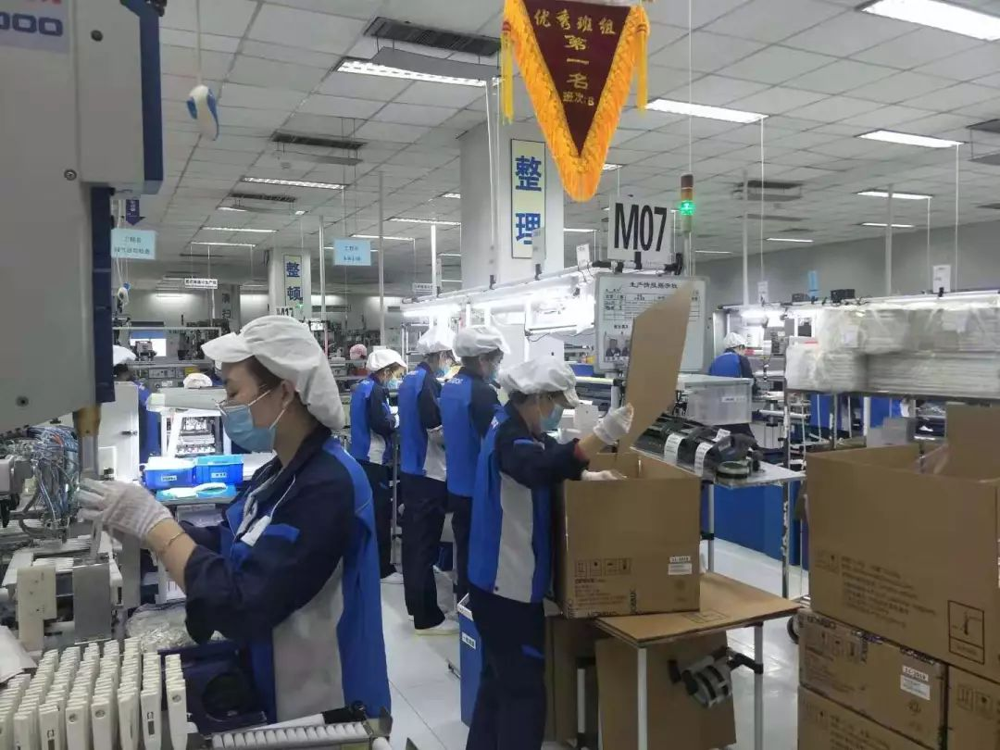
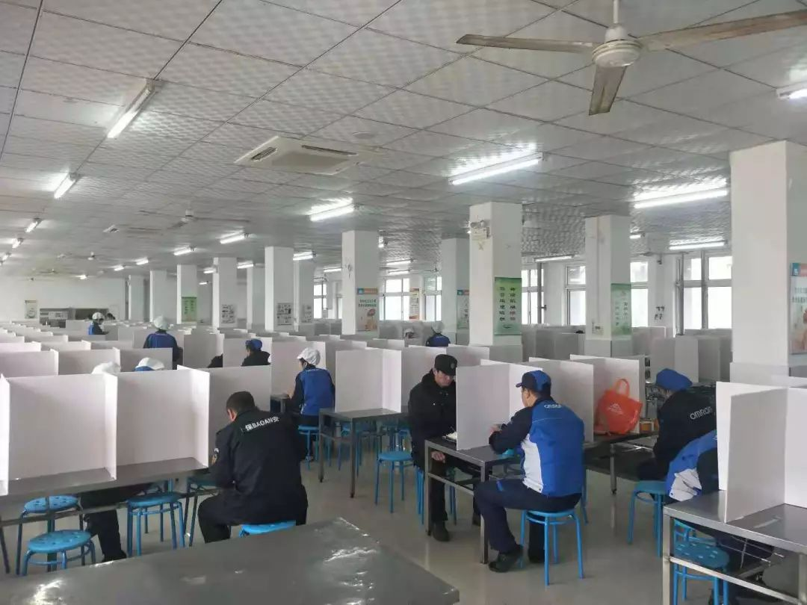
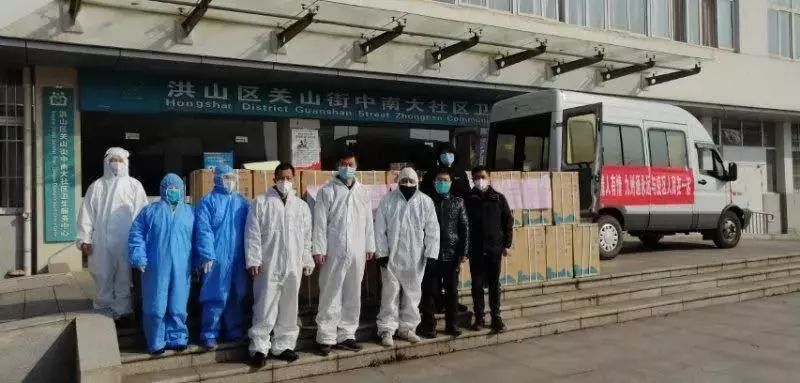

“无人机+特派快递员”，“上海堡垒”由他们铸成
原文链接 备份链接 面对依然紧张的防疫形势，上海的街道、居民区、楼宇不断放出防疫大招，以上海人特有的智慧筑起“上海堡垒”，守卫这座城市。 文 | 陈 冰 2月10日是上海正式意义上的“复工日”，在经历了一个史无前例安静春节之后，人员返程、 …
全文共2913字，阅读大约需要7分钟
文/刘楚玥
编辑/陈淼
疫情滔滔，牵动着每一个中国人的心。医疗物资告急，口罩、护目镜和防护服一时成为最难买的“硬通货”。沧海横流方显英雄本色，在抗疫一线，无数医护人员挺身而出，勇敢逆行，为救治患者与时间赛跑、同病魔较量；在后方，同样有一群人扛起责任，冲锋在前，用坚守和付出传递温暖和力量，这其中就包括许多重要医疗设备制造企业的员工。
1
一夜之间，武汉成为了所有人最密切关注的地方。
为了抗击疫情，这座拥有900万户籍人口、500多万流动人口的城市在除夕前夜宣布封城，机场、火车站、市内公共交通停闭。
配图来源：新华社
周日晚上22:30，欧姆龙武汉地区的业务员唐跃正准备休息，突然接到了一家药店店员的求助电话。原来，以往顾客在店里购买制氧机，店员都会详细讲解使用说明和注意事项，但疫情当前，很多顾客都在门口取了产品就匆匆离去，但回家后却常常不会使用。唐跃是原本只负责制氧机、雾化器、体温计和血压计等医疗设备的销售，但今年春节因人手紧张，售后服务也加入了他的任务清单，唐跃基本随时处于工作状态，药房、供应商和顾客的电话响个不停。
“对，把湿化壶安装上去，然后点击开关……”唐跃一步步指导顾客进行操作。
谈话间唐跃了解到，购买制氧机的顾客并没有什么呼吸健康困扰，只是出于担心和紧张。他在指导完使用方法后多安慰了几句，两个人在互相鼓励中结束了通话。疫情如一朵巨大的乌云，压在每个武汉人的心头，唐跃明显感觉到工作上需要用更多时间处理情绪问题。
“现在全国都在支持武汉，我们自己不动，那肯定不行。”虽然无法像医护人员一样在前线战斗，但他觉得能多给身边顾客做些疏导和鼓励，也是为这场战役尽一份力。
尽管公司已经通知在线办公，但唐跃的工作离不了与药店的接触。为了让家人和自己心安，他每次回到家之前，都会先摘掉口罩，拿酒精去喷湿衣服，单独挂晒存放。
“除了湖北省外，全国确诊人数最近是呈下降趋势的，相信不久之后疫情就会得到控制。”和全国大多数人一样，这个春节唐跃关注最多的就是疫情数据，相信“总会渡过这个难关”。
元宵节前夕，他打完和药店店员的电话，定上了第二天早起的闹钟。他所在的公司欧姆龙已经与广东省钟南山基金会捐赠制氧机100台、压缩式雾化器100台。明天早上他要去仓库清点货物，确保设备能够送到需要的地方。
2
大年初四，关倩回到了自己的办公室。统计数据、沟通信息、联系外包物流公司……原本轻车熟路的工作在特殊的时刻处理起来需要更加小心。春节期间出勤人数有限，她和员工加强了货物的复核工作，尽量做到万无一失。
由于疫情和假期的原因，各地交通管制加强，很多物流网络都没有恢复正常的工作。作为欧姆龙大连物流课课长，关倩这个春节为医疗设备配送的问题焦头烂额，“我们调动了很多其他的网络，包括比较贵的物流平台、租用专车等方式。”
按照以往，年关将至时订单会越来越少，因为客户也知道有可能年前收不到货物，但是今年接近放假的时候反而需求量更大，特别是体温计这一块需求量激增。大年初二，关倩的手机频频震动，工作微信群里已经传来了紧急的需求。
“大连要求10号以前不得复工，但像我们这种作为医疗企业对疫情有帮助，只要有需要的话我们就去。”在群里传达复工通知时，关倩很快便收到了大家积极主动的反馈。物流课通过轮值的形式以最快速度返回了工作岗位。从初二到初七，剩余体温计库存几乎全部发完，订单需求量几乎是往常的十几倍。

生产车间，忙碌在生产一线的工人们
处理完手头的物流订单，关倩抽空瞟了一眼微信消息，是初中的女儿发来提醒她戴好口罩的消息。原本关倩与家人们计划这个春节一起去日本旅行的计划被突如其来的疫情打断，还好老公和女儿都足够理解她的工作，也主动在家里承担了做饭、打扫的家务。
她快速回复了一个“爱心”的表情包，继续投入了紧张的工作中。
3
2月4日早上7:00，林敏从家出发踏上复工之路。
二月的大连春寒料峭，淡淡的雾霾笼罩了整个城市。往日熙熙攘攘的街道冷清了许多，林敏原本的通勤时间缩短了一半。
哪怕隔着N95口罩，都能闻到工厂里淡淡的消毒水味。通过体温检测的林敏进入了车间，早班的工人们已经奋斗在生产第一线。这是欧姆龙工厂春节后复工的第一天，部分工人由于身处异地或需要隔离观察无法到岗，然而产品需求激增，据林敏了解，仅制氧机一类产品，年后的需求量就增加了至少30%，任务艰巨而重要。
“2月4日复工人数大概在100左右，是以往总人数的6%，估计过几天陆陆续续会再增加100人。”提到即将到来的元宵佳节，她有一点期待，“虽然元宵是周六，但是我们已经承诺客户保证产量，所以当天肯定是没法休息，而且元宵节时复工出勤人数应该是近期最多的一天。”
肆虐的疫情打破了中国人习以为常的生活。1月28日，林敏作为紧急对应小组的成员，开始了复工的筹备工作。她是欧姆龙大连地区生产一线负责人，群里的负责人们从摸底排查人员、确定出勤人员名单、厂区班车消毒、餐厅隔离进餐、每日测体温安排和宣贯培训等方面进行了探讨。2月1日，负责人们进行了第二轮沟通，在确保所有准备完善后，敲定了2月4日的复工。

为了减少接触，食堂餐桌上加设了隔离板
“每天时时刻刻需要戴着口罩工作，接触按钮或门把手会用纸巾之类的遮挡一下。”林敏提起工作中需要额外注意很多健康管理，“卫生防范意识还是需要自我强化。”
林敏已经在欧姆龙度过17个春秋，入职的时候刚好是03年SARS肆虐。她清楚记得当时从5月到7月，工厂是几乎隔离封闭的状态，为了最快速度供应需求，他们由16小时两班倒的节奏，变成了24小时三班倒生产无休。
“以体温计为例，当时是手工生产，现在已经模组化了。”提前SARS，她不免有些感慨，“自动化标准生产大大提高了产能，现在同一时间段产量起码是当年的3倍。”
同天被拉入紧急对应小组的还有大连现场品质检察员李菁，质检品控是产品出厂前最后一道重要工序。非常时期，除了依照规章核检产品质量，核检的工作场所和人员也需要特别注意消毒卫生。
“其实刚开始接到返工的消息，家人是有些担忧的。她会觉得‘别人都不上班，怎么就你还提前上班？要是有危险怎么办？’”直到复工前夕，李菁还在耐心安慰年事已高的母亲，“我们生产的是健康医疗的产品，能够帮助控制疫情呢。”
提到家人，李菁情绪放松了一点，眼角里也有了笑意。
阿尔贝·加缪曾说：“这一切与英雄主义无关，而是诚挚的问题。……就我而言，诚挚就是做好本职工作。”疫情面前，没有人是一座孤岛。支援武汉，不是一句空洞的号召，而是每个普通人用自己的力量与社会、国家同行。

春节前夕，欧姆龙中国优先将体温计供往武汉当地最大的医药平台九州通，并通过九州通将1万支体温计捐赠给武汉当地医疗机构、学校等公共机构。此外，捐赠3000支以确保九州通集团员工开展一线疫情防控工作；1月27日，密切关注疫情的欧姆龙中国又将2200支红外线额式体温计，捐赠给上海、大连市政府；2月5日，欧姆龙中国再次决定通过广东省钟南山医学基金会紧急捐赠制氧机100台、压缩式雾化器100台，在武汉慈善会的统筹下，全力驰援武汉的肺炎疫情防控工作。
守望相助，共克时艰。千百年来，中国人面临艰难困苦，从不曾畏惧退缩，这一次，胜利同样终将属于我们。
（文中唐跃、关倩、林敏和李菁均为化名）
（专题）
原文链接 备份链接 面对依然紧张的防疫形势，上海的街道、居民区、楼宇不断放出防疫大招，以上海人特有的智慧筑起“上海堡垒”，守卫这座城市。 文 | 陈 冰 2月10日是上海正式意义上的“复工日”，在经历了一个史无前例安静春节之后，人员返程、 …
原文链接 备份链接 _ 疫情首先冲击劳动密集型的电子组装制造工厂，引发供应链上的各种连锁反应，可能在短期内延缓中国电子信息制造产业飞奔的脚步，政府、行业协会和企业应需要多种形式的互助和自救 _ 文 |《财经》记者 周源 陈潇潇 编辑 | …
原文链接 备份链接 图片来源：视觉中国 记者：辛圆 “ 面对新冠肺炎疫情，黄奇帆表示，除了现在各级政府所采用的税收等政策以外，建议加快推进四个方面的改革，包括尽快落实农民工在城市落户的有关政策、取消企业住房公积金制度、出台政策鼓励企业实行 …
原文链接 备份链接 11.02.2020本文字数：4000，阅读时长大约8分钟 导读：企业虽然很艰难，但目前要做的就是配合执行国家的各项要求，早日战胜疫情，企业能早日找到出路。 作者 | 第一财经 张苑柯 元宵节刚过，疫情之下第一批复工 …
原文链接 备份链接 *************▲*************广州街头，戴着口罩的行人。 （麦圈/图） 全文共2050字，阅读大约需要5分钟。 一场突如其来的疫情，给中国人带来近十年来最长的一个春节假期。随着2月10日的复 …